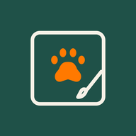
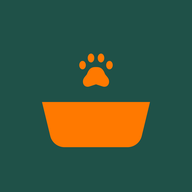
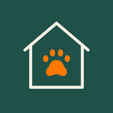

a-Paw apps
Try them in your browser today, on any phone or computer. One a-Paw account works in all of them. Store versions are on their way.
Care-a-PawHealth records, reminders and your pet's story
Track-a-PawLost and found pets near you

Snap-a-PawPainted pet portraits

Feed-a-PawMeals for street animals, round by round

Adopt-a-PawAnimals waiting for a home
Mind-a-PawPet sitting and walking, organised
Put an app on your home screen
iPhone (Safari):
- Open the app above.
- Tap Share (the square with an arrow).
- Tap Add to Home Screen, then Add.
Android (Chrome):
- Open the app above.
- Tap the ⋮ menu.
- Tap Add to Home screen or Install app.
Your account and everything you add stay yours when the store versions arrive: sign in there with the same email and password.